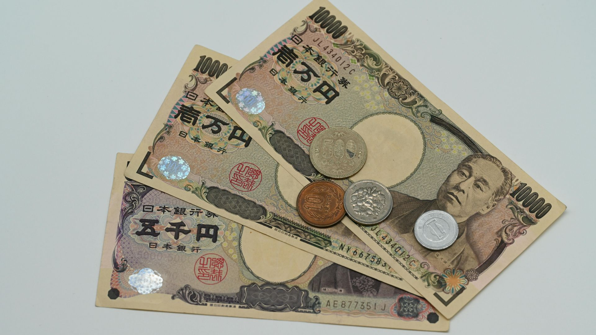
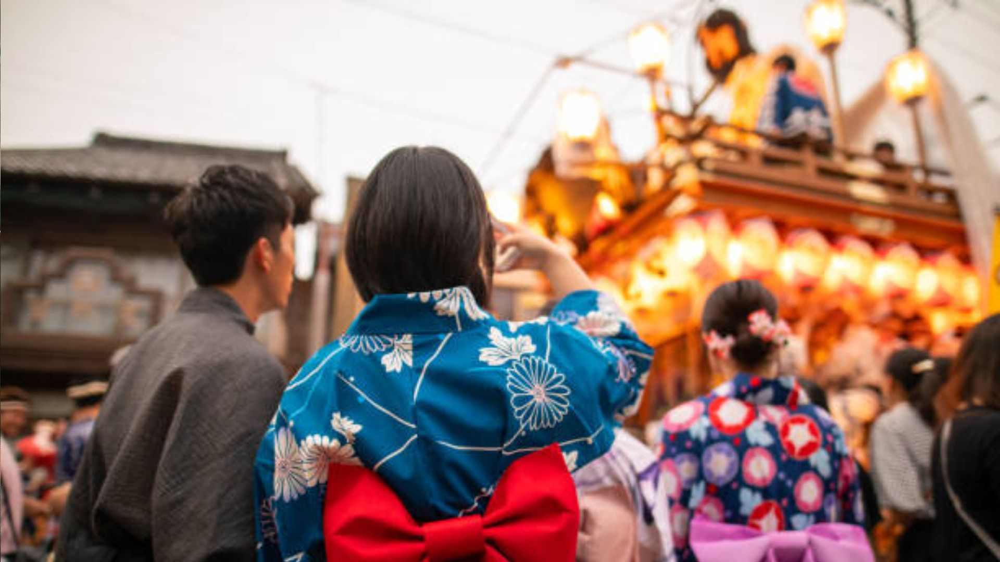
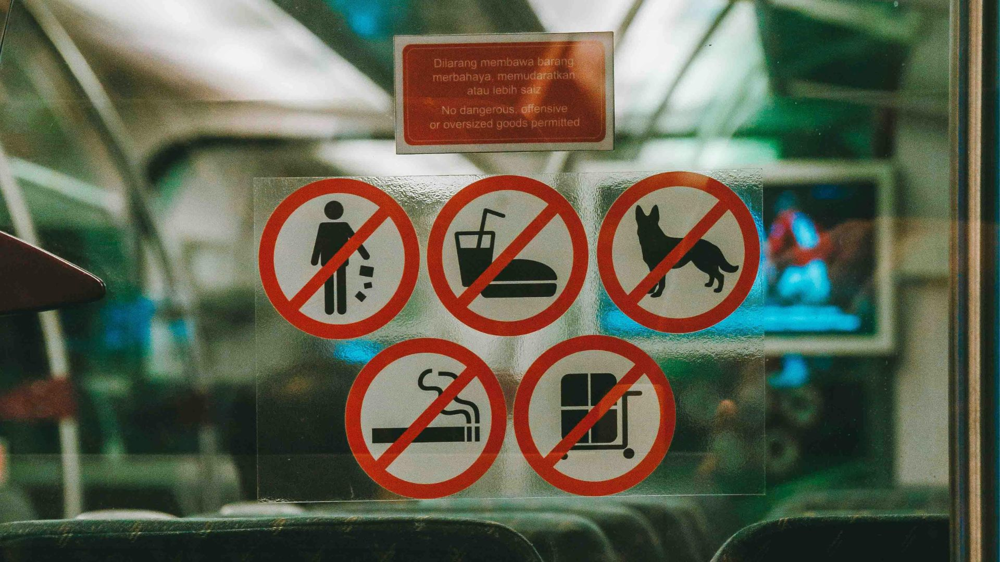
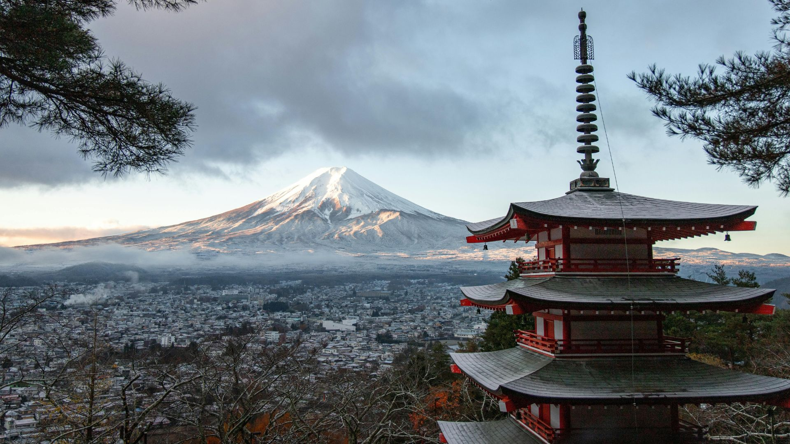
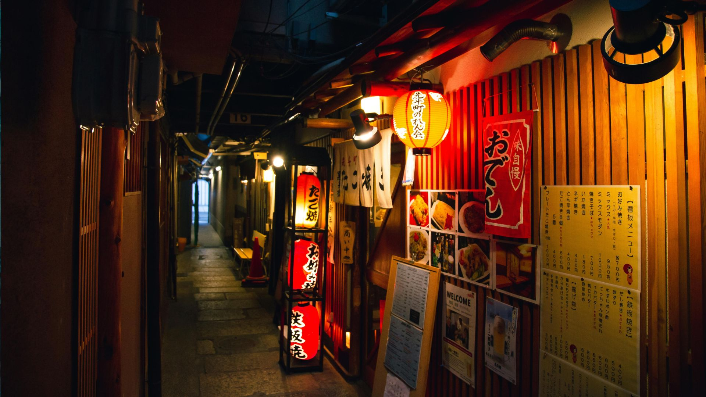
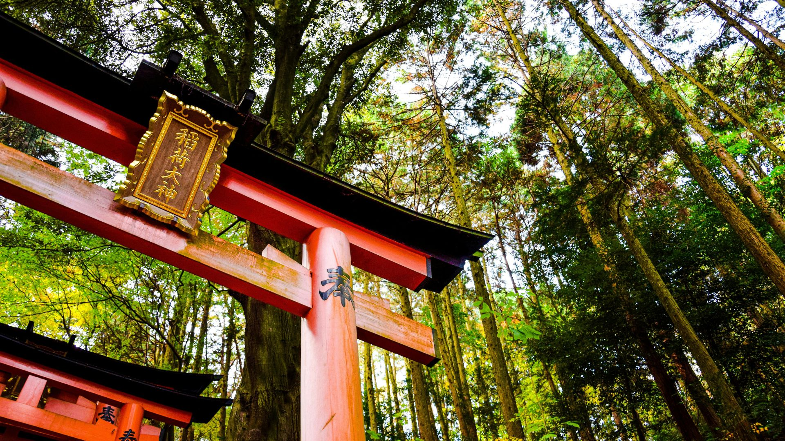
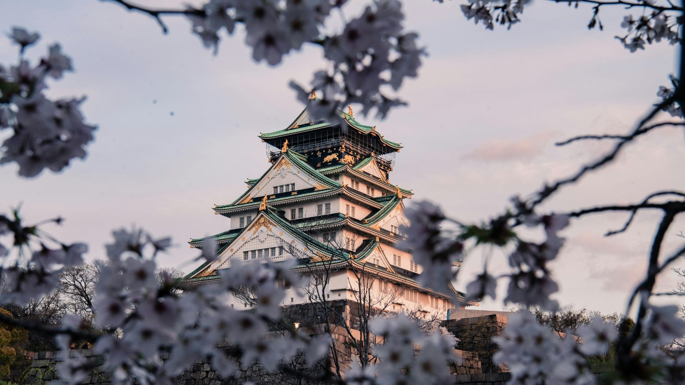
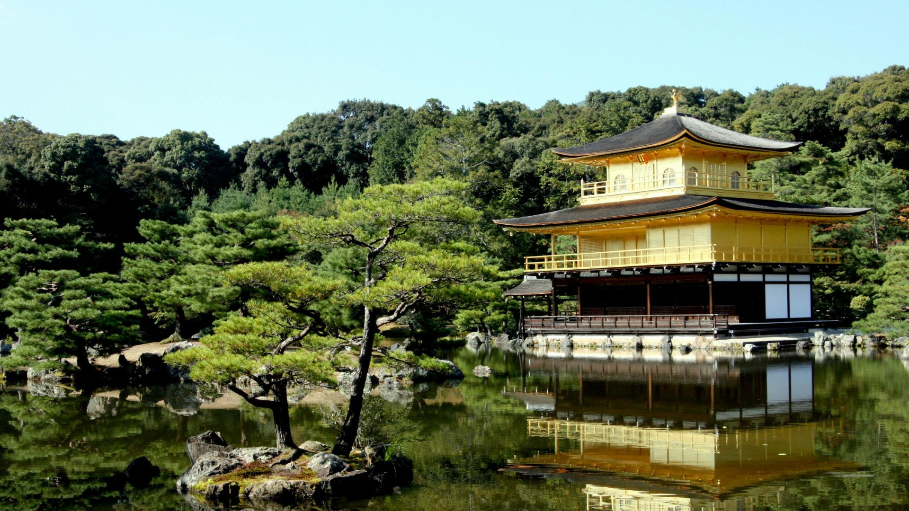

Como escolher um curso de japonês
Aprender japonês pode abrir portas no trabalho e facilitar a vida no Japão. Conheça as opções de cursos e descubra como escolher uma forma de estudar que combine com seus objetivos.
Conheça os cursos →Descubra como é viver no Japão, do trabalho à cultura, aos lugares e aos desafios do dia a dia. Conteúdos úteis e experiências reais de quem vive aqui.
Aprender japonês pode abrir portas no trabalho e facilitar a vida no Japão. Conheça as opções de cursos e descubra como escolher uma forma de estudar que combine com seus objetivos.
Conheça os cursos →Saiba o que pesquisar antes de escolher uma agência para procurar trabalho no Japão.
Ver guia →
Entenda como funcionam as empresas de contratação e qual é o papel delas na busca por emprego.
Ver guia →
Essa é uma das perguntas mais feitas por quem pensa em vir para o Japão. A resposta curta é: sim, vale a pena financeiramente se houver organização. Conheça os principais gastos do dia a dia e entenda como organizar seu dinheiro para viver melhor no Japão.
Conheça o custo de vida no Japão →O que fazer após um acidente de trabalho? Conheça seus direitos, entenda como funciona o seguro Rosai e saiba quais procedimentos seguir para receber atendimento e benefícios no Japão.
Leia o artigo →Descubra as 10 principais regras sociais do Japão que todo visitante precisa conhecer. Desde o silêncio em espaços públicos até a etiqueta à mesa, evite gafes e entenda melhor os costumes japoneses.
Conheça as regras →No Japão, a culinária é repleta de sabores e de cuidados ao fazer cada prato, refletindo não apenas tradição, mas também respeito pelos ingredientes e pela experiência de quem irá comer. Conheça alguns dos pratos mais tradicionais e descubra um pouco mais da gastronomia japonesa.
Conheça os sabores do Japão →
Conheça os festivais japoneses, as tradicionais festas de verão, os fogos de artifício e costumes como o uso do Yukata. Descubra como participar dessas celebrações que fazem parte da cultura do Japão.
Conheça os festivais →O Hinamatsuri (雛祭り), também conhecido como Dia das Meninas ou Festival das Bonecas, é um dos festivais mais delicados e culturalmente ricos do Japão.
Conheça essa tradição →Conhecido como trem-bala, o Shinkansen é um sistema ferroviário de alta velocidade que revolucionou as viagens no Japão. Conheça sua história e como funciona esse transporte.
Conheça o Shinkansen →
O Japão é um país extremamente organizado e com regras sociais muito bem definidas. Muitas atitudes que no Brasil passam despercebidas podem causar desconforto, advertências e até problemas legais por aqui.
Descubra o que é proibido →
O Monte Fuji é o cartão-postal do Japão e a montanha mais famosa do país. Com 3.776 metros de altura, ele atrai milhares de turistas todos os anos. Conheça um pouco mais sobre sua história, suas paisagens e os melhores lugares para apreciar essa montanha impressionante.
Conheça o Monte Fuji →
Shibuya é um dos bairros mais famosos de Tóquio e um dos centros urbanos mais movimentados do Japão. Conheça seus cruzamentos famosos, lojas, atrações e a energia de uma das regiões mais conhecidas da capital japonesa.
Explore Shibuya →
A Floresta de Bambu de Arashiyama é um dos cenários naturais mais famosos do Japão. Localizada em Kyoto, oferece uma paisagem impressionante, com caminhos cercados por enormes bambus.
Conheça Arashiyama →
O Castelo de Himeji é considerado um dos castelos mais famosos e mais bem preservados de todo o Japão. Localizado na província de Hyōgo, é um importante exemplo da arquitetura histórica japonesa.
Conheça o Castelo Himeji →O Parque de Nara é um dos destinos turísticos mais famosos do Japão. Localizado na cidade histórica de Nara, é conhecido mundialmente pelos veados que circulam livremente pelo parque.
Visite o Parque de Nara →
O Templo do Pavilhão Dourado, conhecido em japonês como Kinkaku-ji, é um dos templos mais famosos e fotografados do Japão. Localizado em Kyoto, impressiona pela arquitetura e pelo cenário ao redor.
Conheça o Kinkaku-ji →Neste vídeo eu trago uma reflexão sobre algumas mudanças e decisões recentes relacionadas aos estrangeiros que vivem no Japão.
O assunto tem gerado bastante debate e até protestos em algumas comunidades, e aqui compartilho minha visão sobre esse cenário.
Nossa rotina de vida. hoje vou mostrar um pouco de como é viver aqui, as pequenas coisas do cotidiano e as experiências que fazem parte da vida de quem escolheu trabalhar e construir uma vida no Japão.
Nem sempre é fácil, mas cada dia traz uma nova história para contar.
Nem sempre as coisas acontecem como esperamos. Às vezes tentamos, insistimos e mesmo assim os resultados não aparecem.
Por isso estou refletindo sobre a possibilidade de começar uma nova etapa em outra província do Japão, sempre pedindo a Deus sabedoria para tomar a decisão certa.
Hoje foi um dia muito especial e cheio de emoções para nossa família aqui no Japão.
Foi o dia da despedida do meu filho do Hoikuen (creche japonesa), marcando o fim de uma etapa muito importante na vida dele.
Última atualização: Maio de 2026
↑